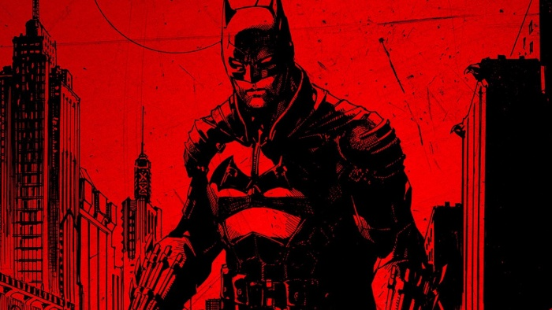

BATMAN

Batman é um vigilante de Gotham cuja identidade é desconhecida,
costuma atuar apenas à noite, imitando os hábitos dos morcegos.
Habilidoso em formas de combate corpo a corpo ou com armas
e ainda é o maior detetive do mundo: mestre em fugas, disfarces
é especialista em ocultar-se, entra e sai de lugares sem ser notado.